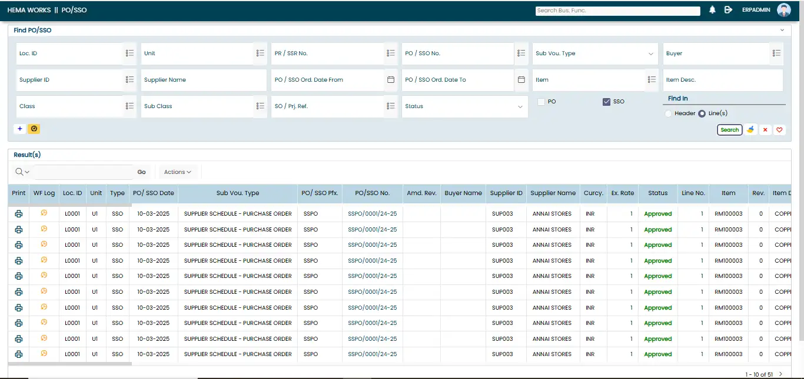
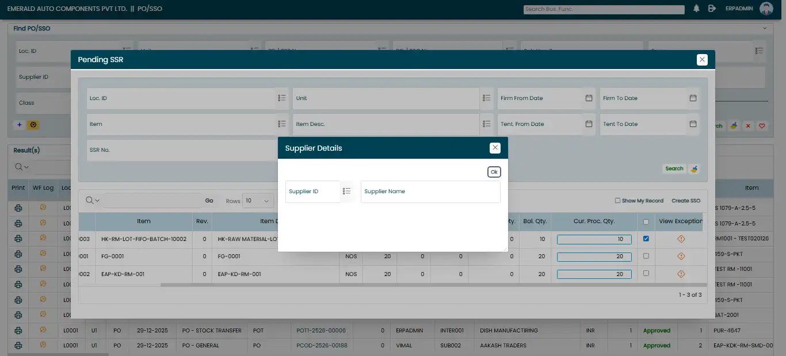
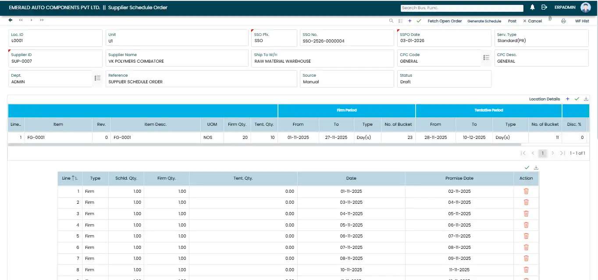

<div data-category="Purchase Order" data-title="Supplier Schedule Order from SSR" data-updated="December 01, 2025" data-contributors="RoadmapIT" data-breadcrumb="Home,Purchase Order,Supplier Schedule Order from SSR">
  <div class="page-content">
    <p>Supplier Schedule Order (SSO) enables Business Units to convert approved Supplier Schedule Requests (SSR) into firm orders.</p>

    <h5>Navigation path:</h5>
    <p class="fs-6">Supply Chain \ Purchasing \ Transaction \ Supplier Schedule Order</p>

    

    <ul style="list-style-type: none; align-content: center">
      <li class="mouse-icon">
        Click
        <i class="bi bi-clock-history fs-4 mx-2 text-primary"></i>
        button and Navigate into Pending Supplier schedule Request.
      </li>
    </ul>

    

    <ul style="list-style-type: none; align-content: center">
      <li class="mouse-icon">Filter the Required the Supplier Schedule Request Document.</li>
      <li class="mouse-icon">Select the Supplier Schedule Request Document and Create SSO.</li>
      <li class="mouse-icon">Choose the Supplier to click OK button and supplier schedule order created and navigate into Supplier schedule order document.</li>
    </ul>

    

    <ul style="list-style-type: none; align-content: center">
      <li class="mouse-icon">Fetch the item in fetch open order field.</li>
      <li class="mouse-icon">
        Click Generate the schedule and check the Schedule details generated and click post
        <i class="bi bi-check-lg fs-4 mx-1 text-success"></i>
        to post the document.
      </li>
      <li class="mouse-icon">Use cancel button to cancel the document.</li>
      <li class="mouse-icon">To approve the document, Navigate to the Workflow approvals screen.</li>
      <li class="mouse-icon">
        Click View details
        <i class="bi bi-info-circle text-primary"></i>
        for specific document, Screen navigate into query screen to check the details.
      </li>
      <li class="mouse-icon">After click the close button document navigate into Approval screen.</li>
      <li class="mouse-icon">Choose the Approval/forward/Return button field and click Process button required process performed.</li>
    </ul>
  </div>
</div>
